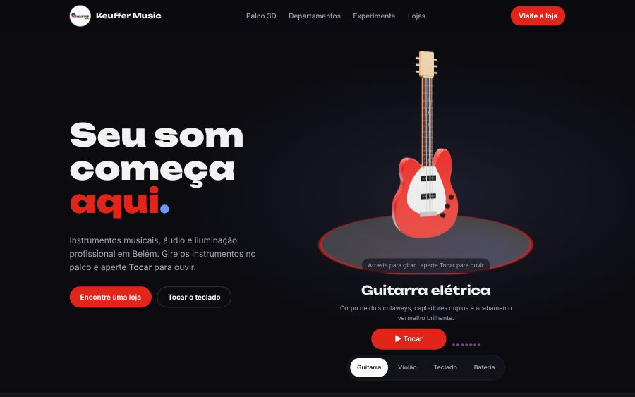
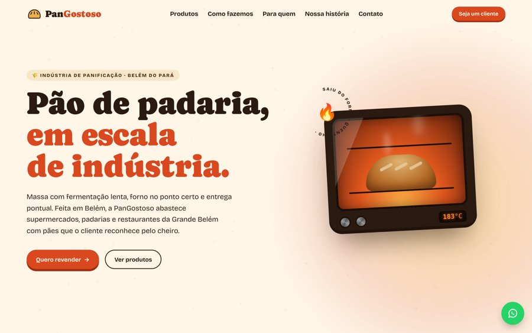
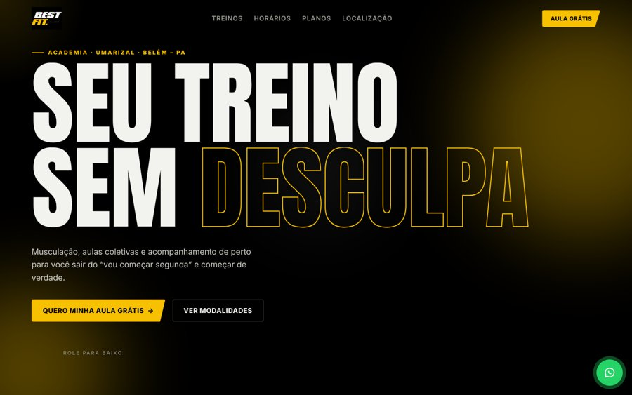
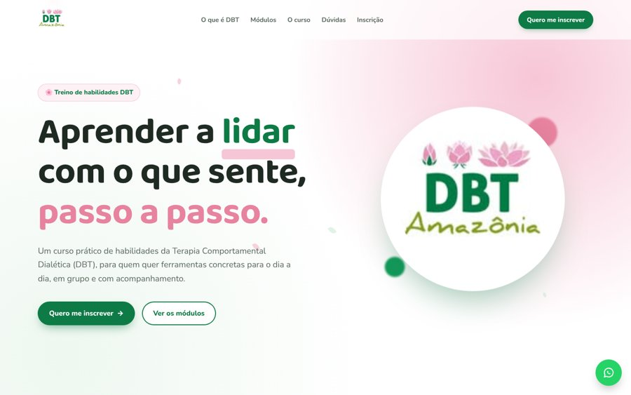
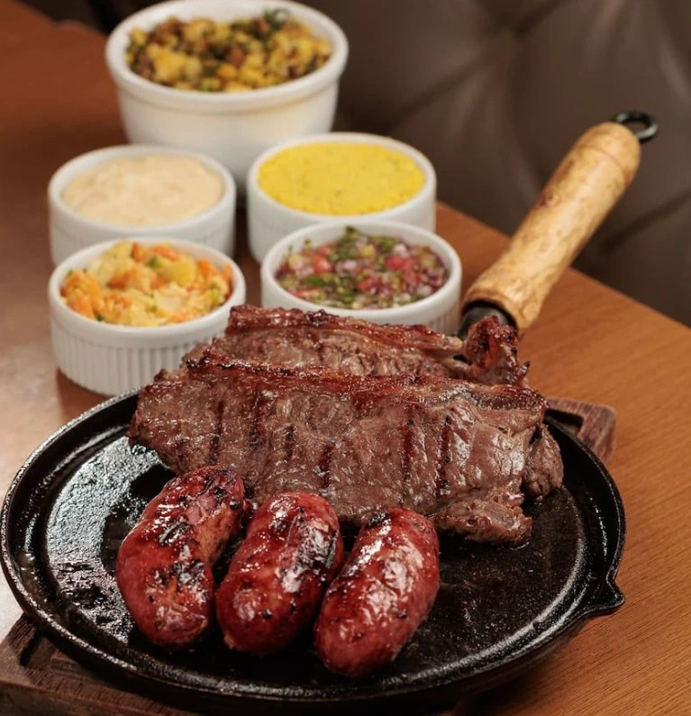
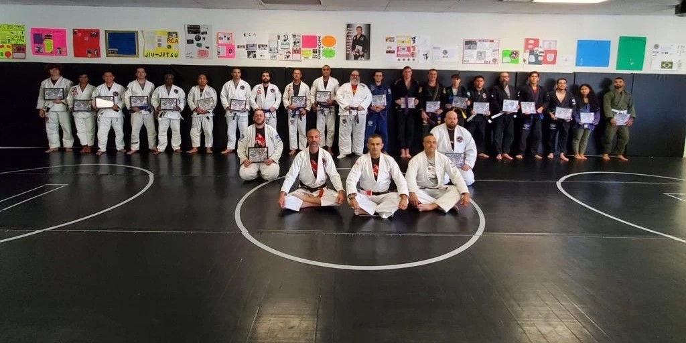
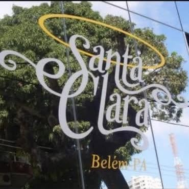
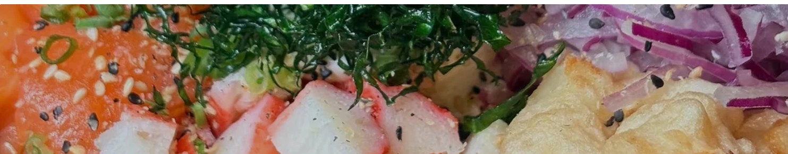
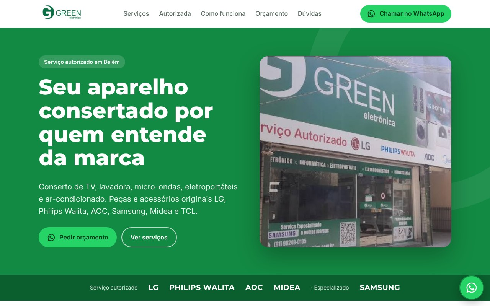
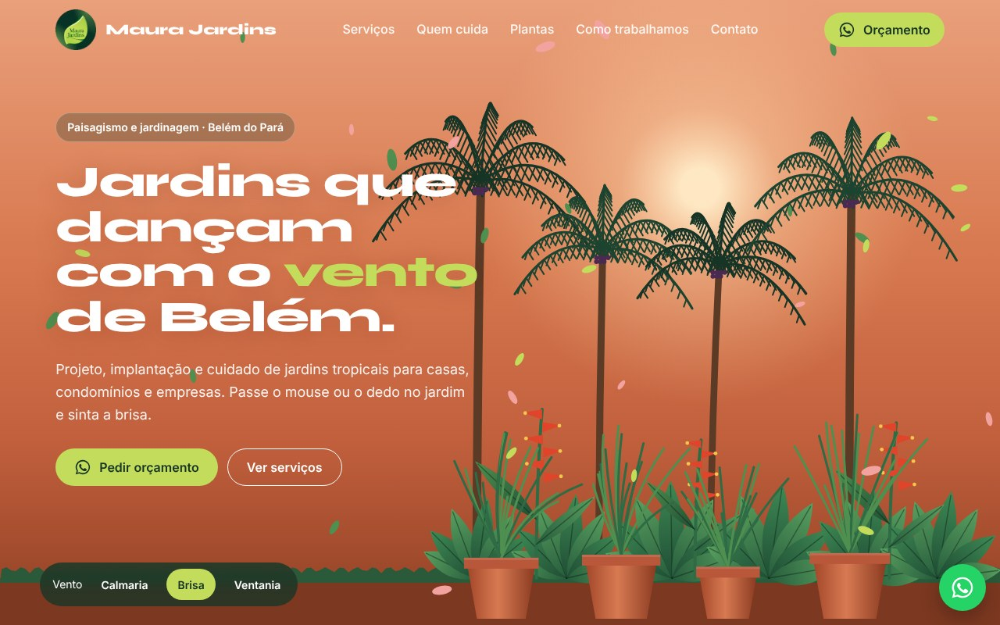

Automações com IA
Fluxos que atendem, organizam e respondem por você. Menos tarefa repetitiva, mais tempo para o que importa.
- Atendimento automatizado
- Integração de sistemas
- Relatórios e fluxos
Estúdio · IA · Web · Mídia
Eu crio automações com inteligência artificial, sites que vendem e conteúdos que contam a sua história. Tudo pensado para o seu negócio funcionar melhor, todo dia.
Serviços
Fluxos que atendem, organizam e respondem por você. Menos tarefa repetitiva, mais tempo para o que importa.
Sites rápidos, bonitos e pensados para converter. Do institucional à landing page de campanha.
Conteúdo visual e em vídeo que traduz a sua marca, com uma identidade consistente em todos os canais.
Portfólio

Loja de instrumentos em Belém com palco 3D: guitarra, violão, teclado e bateria que giram e tocam de verdade.

Site de indústria de panificação em Belém, com forno animado e linha regional.

Escritório de contabilidade e serviços em três idiomas, com contagem de prazos.

Site de academia com planos, quadro de aulas e agendamento pelo WhatsApp.

Site de psicóloga com atendimento, avaliação neuropsicológica e contato.

Site de curso de treino de habilidades DBT, com identidade em verde e rosa.

Site de filósofa residente do AI Collective, em português, inglês e francês.
Site de loja de produtos asiáticos, com produtos, delivery e unidades.

Site de churrascaria desde 2004, com steak, espetos, combos e cardápio completo com preços.

Site de arena de beach tênis, com quadras, lounge e reserva pelo WhatsApp.

Site de essências, perfumaria e matéria-prima, com oficinas, catálogo e lojas em três cidades.
Currículo institucional com trajetória, conselhos, formação e contato.

Site de academia de Brazilian Jiu-Jitsu, com aulas gratuitas, galeria e contato.

Site de funilaria, pintura, estética automotiva, película e PPF, com visual de rua e curvas de pinstripe.

Padaria em Belém desde 1960, com pães quentinhos, salgados, tortas, café da manhã e delivery pelo WhatsApp.

Site de rodízio de sushi em Belém, com galeria de pratos, unidades e pedido pelo iFood.

Conserto de TV, lavadora e micro-ondas em Belém, com site de atendimento.

Paisagismo e jardinagem em Belém, com plantas tropicais, vasos e floreiras.
Os projetos estão em versão de apresentação. Os dados de contato e os textos de cada cliente são confirmados antes da publicação.
Mini apps
Quatro mini apps criados para uso direto: abra no próprio site ou use aqui mesmo.


Sobre
Trabalho com o que faz a diferença no dia a dia do seu negócio: automatizar o que é repetitivo, criar presença digital que converte e contar a sua história com qualidade.
Cada projeto começa entendendo a rotina de quem usa. Só depois eu escolho a ferramenta.
Contato
Conte sobre o seu projeto. Respondo para combinar uma conversa.